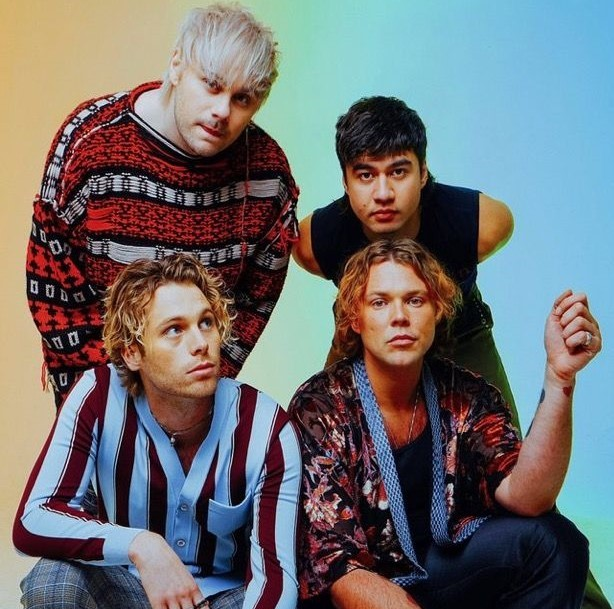
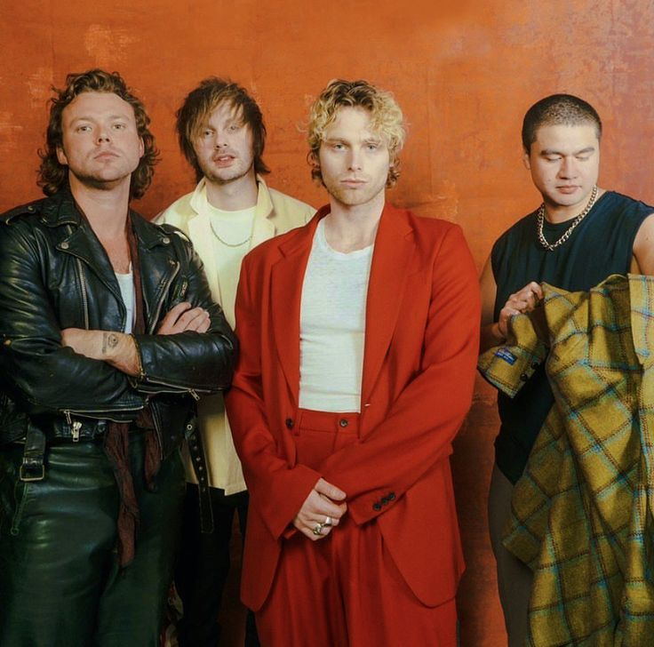

5 Seconds of Summer (5SOS) es una banda de pop-rock originaria de Sídney, Australia, formada en 2011. La banda está compuesta por Luke Hemmings (voz principal y guitarra rítmica), Michael Clifford (guitarra líder y voz secundaria), Calum Hood (bajo y voz secundaria) y Ashton Irwin (batería y voz secundaria). A pesar de ser conocidos por su estilo musical que combina pop-punk y pop-rock, su origen tiene un toque bastante único. La historia de 5SOS comenzó cuando los miembros se conocieron en la escuela secundaria en Sídney. Luke Hemmings, el cantante principal, empezó a subir videos de él cantando en YouTube, y fue a través de esta plataforma que rápidamente llamó la atención de los demás miembros. Al principio, la banda no tenía nombre ni una idea clara de su futuro, pero con el tiempo se unieron para formar lo que sería 5 Seconds of Summer. Durante sus primeros años, la banda hizo covers de canciones populares en YouTube, lo que les ayudó a ganar seguidores. En 2011, su gran oportunidad llegó cuando fueron contactados por el grupo británico One Direction. Los miembros de One Direction quedaron impresionados por el talento de la banda australiana y decidieron invitarlos a ser su acto de apertura en su gira por el Reino Unido. Esta oportunidad fue crucial para la carrera de 5SOS, ya que les permitió exponer su música a un público mucho más amplio y ganar una base de fans internacional.

5 SECONDS OF SUMMER
El Camino De 5sos

